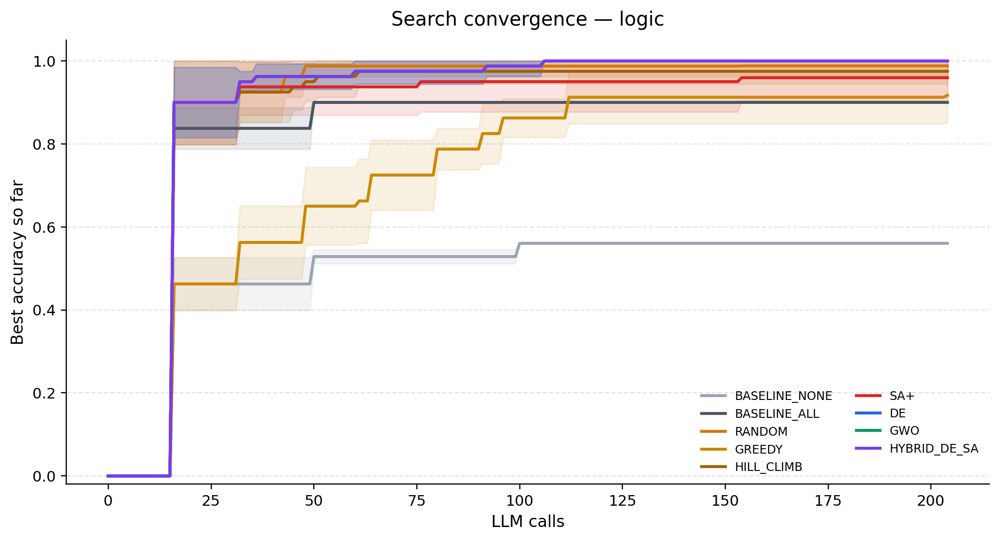
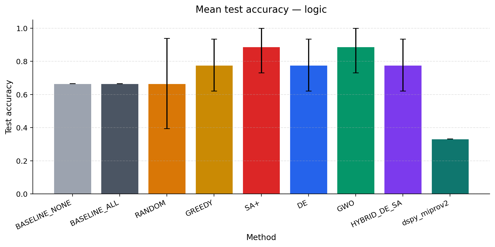

DE
test 100.0% · seed 0 · demos [0, 2, 5, 6, 7]
Task: Evaluate the given Boolean expression with constants True/False, operators NOT/AND/OR, and parentheses. Operator precedence is: NOT > AND > OR (unless parentheses override).
Prompt optimization · combinatorial search · budgeted evaluation
A prompt is a binary genome: which instruction blocks to keep, and which demonstrations to include. Simulated Annealing, Differential Evolution, Grey Wolf Optimizer, and a DE→SA hybrid compete under a shared call budget against greedy, random, and static baselines.
100 items per task, 50/50 split, 16-example demo pool, 5 seeds, 220-call budget. The mock model’s accuracy depends on which instructions and demos are selected, so the search is real. Anyone can rerun this in under a minute with no GPU. On both tasks, DE, GWO, and Hybrid DE-SA beat BASELINE_ALL by Wilcoxon signed-rank (p = 0.031, n = 5). Greedy search does not.
| Method | Test | Std | Train | Calls | Seeds |
|---|---|---|---|---|---|
| BASELINE_NONE | 56.0% | ±0.0% | 52.0% | 100 | 5 |
| BASELINE_ALL | 84.0% | ±0.0% | 90.0% | 100 | 5 |
| RANDOM | 90.8% | ±7.3% | 92.8% | 204 | 5 |
| GREEDY | 81.6% | ±12.0% | 84.8% | 204 | 5 |
| HILL_CLIMB | 88.0% | ±8.9% | 86.4% | 196 | 5 |
| SA+ | 82.4% | ±12.3% | 90.4% | 196 | 5 |
| DE | 97.2% | ±1.6% | 97.2% | 204 | 5 |
| GWO | 97.2% | ±1.6% | 97.2% | 204 | 5 |
| HYBRID_DE_SA | 97.2% | ±1.6% | 97.2% | 204 | 5 |

| Method | Test | Std | Train | Calls | Seeds |
|---|---|---|---|---|---|
| BASELINE_NONE | 28.0% | ±0.0% | 32.0% | 100 | 5 |
| BASELINE_ALL | 68.0% | ±0.0% | 62.0% | 100 | 5 |
| RANDOM | 80.0% | ±3.8% | 83.2% | 204 | 5 |
| GREEDY | 49.6% | ±4.5% | 56.0% | 204 | 5 |
| HILL_CLIMB | 77.6% | ±10.5% | 80.4% | 204 | 5 |
| SA+ | 74.8% | ±6.6% | 81.6% | 204 | 5 |
| DE | 82.8% | ±5.3% | 81.2% | 204 | 5 |
| GWO | 82.8% | ±5.3% | 81.2% | 204 | 5 |
| HYBRID_DE_SA | 82.8% | ±5.3% | 81.2% | 204 | 5 |
Real LLM numbers from Llama 3.2 via Ollama. This was a small-n study (3 seeds, test set of 3 logic items). Accuracy therefore jumps in thirds. It is a pilot, not a claim of statistical significance.
| Method | Test | Std | Train | Calls | Seeds |
|---|---|---|---|---|---|
| BASELINE_NONE | 66.7% | ±0.0% | 66.7% | 15 | 3 |
| BASELINE_ALL | 66.7% | ±0.0% | 33.3% | 15 | 3 |
| RANDOM | 66.7% | ±27.2% | 88.9% | 95 | 3 |
| GREEDY | 77.8% | ±15.7% | 86.1% | 89 | 3 |
| SA+ | 88.9% | ±15.7% | 75.0% | 76 | 3 |
| DE | 77.8% | ±15.7% | 80.6% | 95 | 3 |
| GWO | 88.9% | ±15.7% | 77.8% | 95 | 3 |
| HYBRID_DE_SA | 77.8% | ±15.7% | 77.8% | 95 | 3 |
| dspy_miprov2 | 33.3% | ±0.0% | 83.3% | 0 | 1 |

Best test configuration per method on the mock boolean split.
test 100.0% · seed 0 · demos [0, 2, 5, 6, 7]
Task: Evaluate the given Boolean expression with constants True/False, operators NOT/AND/OR, and parentheses. Operator precedence is: NOT > AND > OR (unless parentheses override).
test 100.0% · seed 0 · demos [0, 2, 5, 6, 7]
Task: Evaluate the given Boolean expression with constants True/False, operators NOT/AND/OR, and parentheses. Operator precedence is: NOT > AND > OR (unless parentheses override).
test 100.0% · seed 0 · demos [0, 2, 5, 6, 7]
Task: Evaluate the given Boolean expression with constants True/False, operators NOT/AND/OR, and parentheses. Operator precedence is: NOT > AND > OR (unless parentheses override).
test 98.0% · seed 0 · demos [0, 1, 2, 3, 4]
Task: Evaluate the given Boolean expression with constants True/False, operators NOT/AND/OR, and parentheses. Operator precedence is: NOT > AND > OR (unless parentheses override). Output exactly one token: yes or no. No punctuation, no explanation.
test 98.0% · seed 0 · demos [0, 1, 2, 3, 4]
Task: Evaluate the given Boolean expression with constants True/False, operators NOT/AND/OR, and parentheses. Operator precedence is: NOT > AND > OR (unless parentheses override). Output exactly one token: yes or no. No punctuation, no explanation.
test 98.0% · seed 0 · demos [0, 1, 2, 3, 4]
Task: Evaluate the given Boolean expression with constants True/False, operators NOT/AND/OR, and parentheses. Operator precedence is: NOT > AND > OR (unless parentheses override). Output exactly one token: yes or no. No punctuation, no explanation.
pip install -r requirements.txt python -m src experiment --portfolio python -m src stats --path results/benchmark_mock/runs.jsonl python -m src site
Live LLM: ollama pull llama3.2 && python -m src experiment --balanced --backend ollama